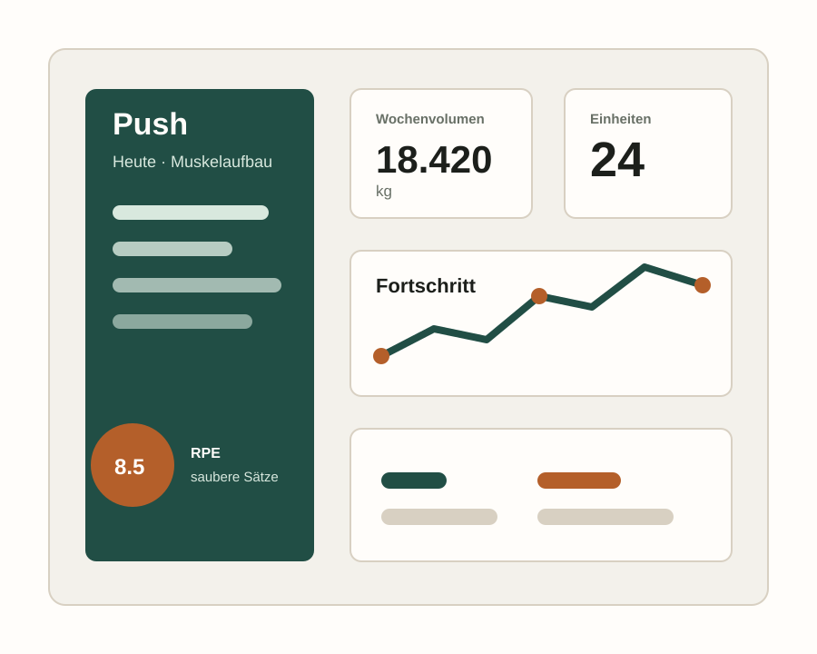

Trainingssystem für das Fitnessstudio
Ein klarer Plan, ein sauberer Tracker und echte Umsetzung im Gym.
StudioCoach verbindet Push/Pull/Legs-Programm, Satzerfassung, Progressionsregeln und Praxisanleitung in einer einfachen Website.

Was die Website macht
Normale Website plus nutzbares Trainingsprogramm
Programm
Kompletter Push/Pull/Legs-Plan mit Übungen, Sätzen, Wiederholungen, Pausen und Technikhinweisen.
Training erfassen
Gewicht, Wiederholungen, RPE, Körpergewicht, Schlaf, Energie und Notizen direkt im Gym eintragen.
Progression
Die App berechnet Volumen und gibt klare Empfehlungen für die nächste Einheit.
Praxis
Konkreter Ablauf vom Warm-up bis zur Entscheidung, wann du Gewicht erhöhst oder reduzierst.
Umsetzung
So nutzt du es im echten Training
Split wählen, Plan öffnen, letzte Werte prüfen und realistische Startgewichte festlegen.
Nach jedem Satz Gewicht, Wiederholungen und RPE eintragen. Keine Schätzungen am Ende.
Notizen ergänzen, speichern, Empfehlung prüfen und bei Bedarf als TXT oder CSV exportieren.